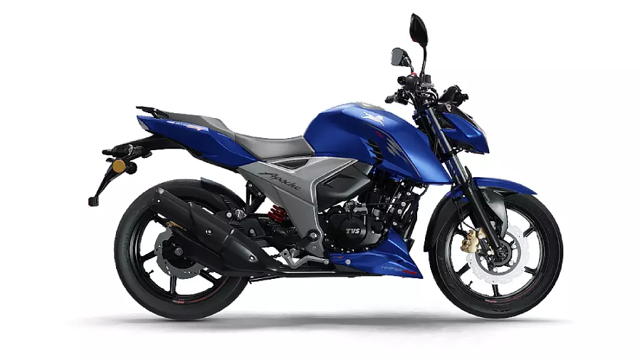

TVS Apache RTR 160 4V
₹ 1,23,000
TVS Company is introducing a new Bike in 2023 which is TVS-Apache-RTR-160-4V. You can select the color of your bike which you want. The TVS Apache RTR 160 4V is powered by 159.7cc BS6 engine which develops a power of 17.31 bhp and a torque of 14.73 Nm. With both front and rear disc brakes, TVS Apache RTR 160 4V comes up with anti-locking braking system. This Apache RTR 160 4V bike weighs 146 kg and has a fuel tank capacity of 12 liters.The Mileage of TVS Apache RTR 160 4V is 41kmpl. There are Five Colors of TVS Apache RTR 160 4V are 1st is Knight Black, 2nd is Metallic-Blue, 3rd is Matte-Black, 4rth is Lighting Blue and the 5th is Racing Red.
Perchase Now More